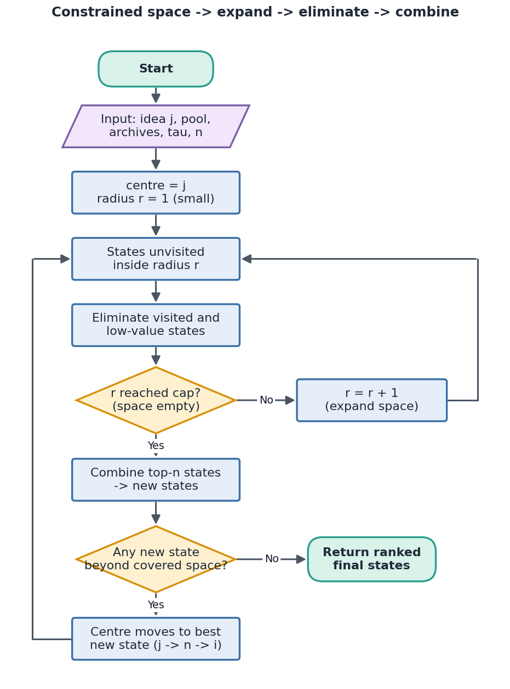
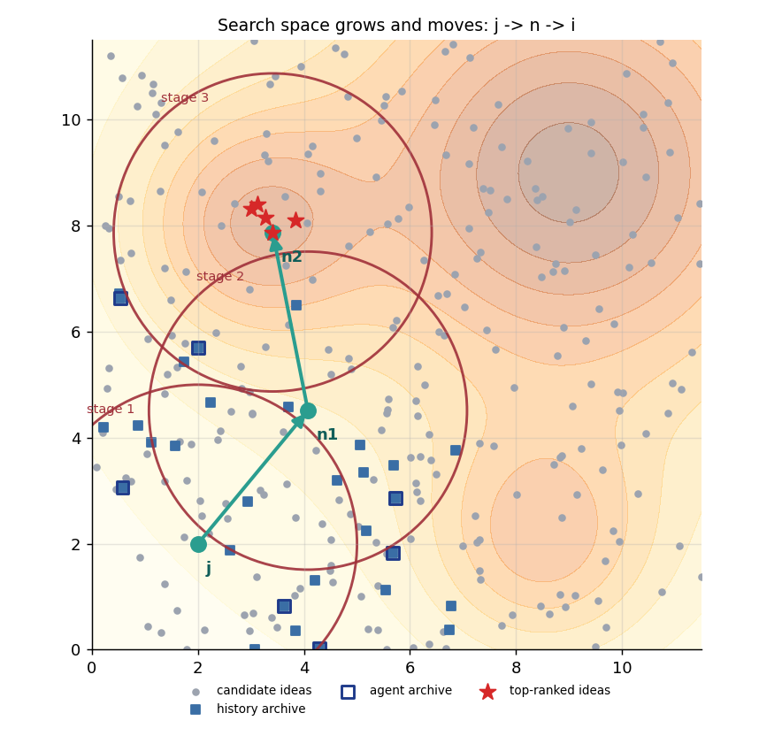
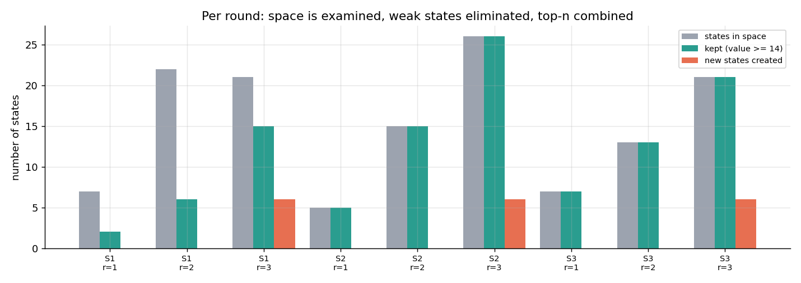
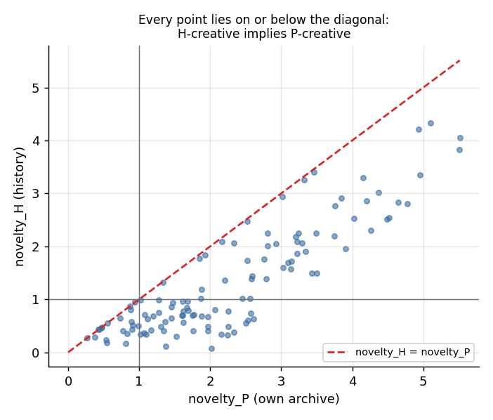
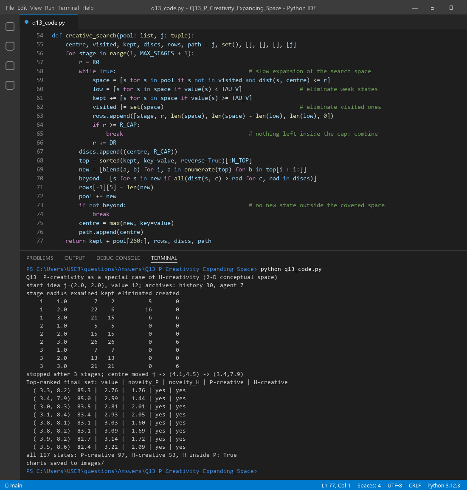

H-creativity means the idea is new to the whole world. P-creativity means it is new to me, even if others had it before. The only difference is what memory we compare against. H compares with everything humans have ever produced. P compares only with what this agent has seen. So P is H with a smaller memory. Because the agent knows less than history, anything that is new to history is also new to the agent. Every H-creative idea is P-creative, but not the other way round.
The algorithm then works like a curious person exploring: start with a small, safe area near one idea (so almost everything feels new), widen it slowly, throw out weak ideas, and when the area is used up, mix the best ideas to make new ones and move on.
| Measure | Definition |
|---|---|
| noveltyH(s) | min distance from idea s to any idea in the history archive |
| noveltyP(s) | min distance from s to any idea in the agent archive, where Archiveagent ⊆ Archivehistory |
| H-creative | noveltyH(s) ≥ τ and value(s) is high |
| P-creative | noveltyP(s) ≥ τ and value(s) is high |
| Special-case rule | P(s) = H(s | archive = agent's own memory). Since the agent archive is a subset, noveltyP ≥ noveltyH always. |

function CreativeSearch(pool, j, tau_v, n):
centre ← j; VISITED ← { }; KEPT ← [ ]; COVERED ← [ ]
repeat (stage = 1, 2, ...):
r ← r0 # small, constrained circle
loop:
SPACE ← { s in pool : s not in VISITED, dist(s, centre) ≤ r }
KEPT += { s in SPACE : value(s) ≥ tau_v } # weak states are eliminated
VISITED += SPACE # visited states are eliminated
if r ≥ r_cap: break # space is empty
r ← r + dr # slow expansion
COVERED.add(circle(centre, r_cap))
TOP ← n best of KEPT by value
NEW ← { blend(a, b) : a, b in TOP } # combine top performers
pool += NEW
if no state of NEW is outside COVERED: break
centre ← best of NEW # j -> n -> i
return all states ranked by value
| Stage | Radius | States in space | Kept | Eliminated | New states created |
|---|---|---|---|---|---|
| 1 | 1 | 7 | 2 | 5 | 0 |
| 1 | 2 | 22 | 6 | 16 | 0 |
| 1 | 3 | 21 | 15 | 6 | 6 |
| 2 | 1 / 2 / 3 | 5 / 15 / 26 | 5 / 15 / 26 | 0 | 6 (at r = 3) |
| 3 | 1 / 2 / 3 | 7 / 13 / 21 | 7 / 13 / 21 | 0 | 6 (at r = 3) |
At the start the circle around j holds only weak ideas (value around 12), so 5 of 7 are eliminated. By the end of stage 1, the circle is empty and the 4 best kept states are blended into 6 new ones. The centre jumps from j to (4.1, 4.5). In stage 2 the circle is already in a better area, so nothing is eliminated and the next jump goes to (3.4, 7.9). In stage 3 the six new states all fall inside the space already covered, so the search stops.


| Idea (x, y) | Value | noveltyP | noveltyH | P-creative | H-creative |
|---|---|---|---|---|---|
| (3.3, 8.2) | 85.3 | 2.76 | 1.76 | yes | yes |
| (3.4, 7.9) | 85.0 | 2.59 | 1.44 | yes | yes |
| (3.0, 8.3) | 83.5 | 2.81 | 2.01 | yes | yes |
| (3.1, 8.4) | 83.4 | 2.93 | 2.05 | yes | yes |
| (3.8, 8.1) | 83.1 | 3.03 | 1.60 | yes | yes |
The start idea j had value 12, and the best final idea has value 85.3. Across all 117 states the search kept or created, 97 are P-creative and 53 are H-creative, and every H-creative one is also P-creative. Figure 4 shows why: no point sits above the diagonal.

A small first circle keeps the agent's decisions simple and cheap, and it makes most moves new to this agent (P-creative) because it has seen so little. Constraints also focus creativity, as the course notes say. Widening the circle slowly, and only combining when the space is empty, is how the agent moves from exploring to combining and toward H-creativity. It also corresponds to Boden's forms: exploring inside the space first, then combinational creativity, and a shifting centre that gradually transforms the space.

Files in this folder: q13_code.py (source), q13_code.ipynb (Colab/Jupyter version, already run),
q13_output.txt (console output), images/ (all figures).